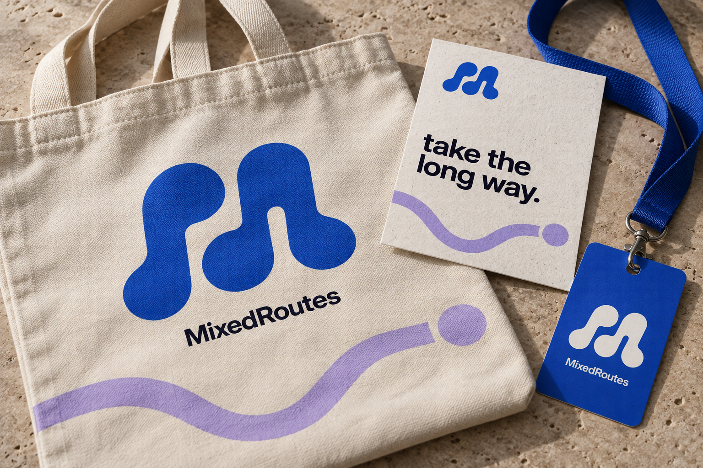

APrimary mark · V2 blue
Option A / The symbolism
routes in rhythm.
Winding paths echo MixedRoutes bringing different people together through shared plans.
One mark.
A world of interests.
A world of interests.
Routes that run through the brand.
Connect the moments. Give the page a direction.
MixedRoutes
take the
long way.

 First, the good coffee.
First, the good coffee.Sunday walking club
Come along ↗9 AM · Coffee, then the riverside path
MixedRoutes
SUN20Coffee, then
a wander.
9:00 AM · The corner caféMeet over a flat white.
10:00 AM · Riverside pathSee where the morning takes us.
A little nudge
from an idea
to out the door.
Your walk starts in 30 minutes.
The corner café · See you there.
Physical collateral
A kit for the long way.

Cotton tote
The blue mark and winding route become a wearable graphic.
Event pass
A compact mark gives the walking club a clear identity.
Printed card
Bold type and a simple route carry the invitation.